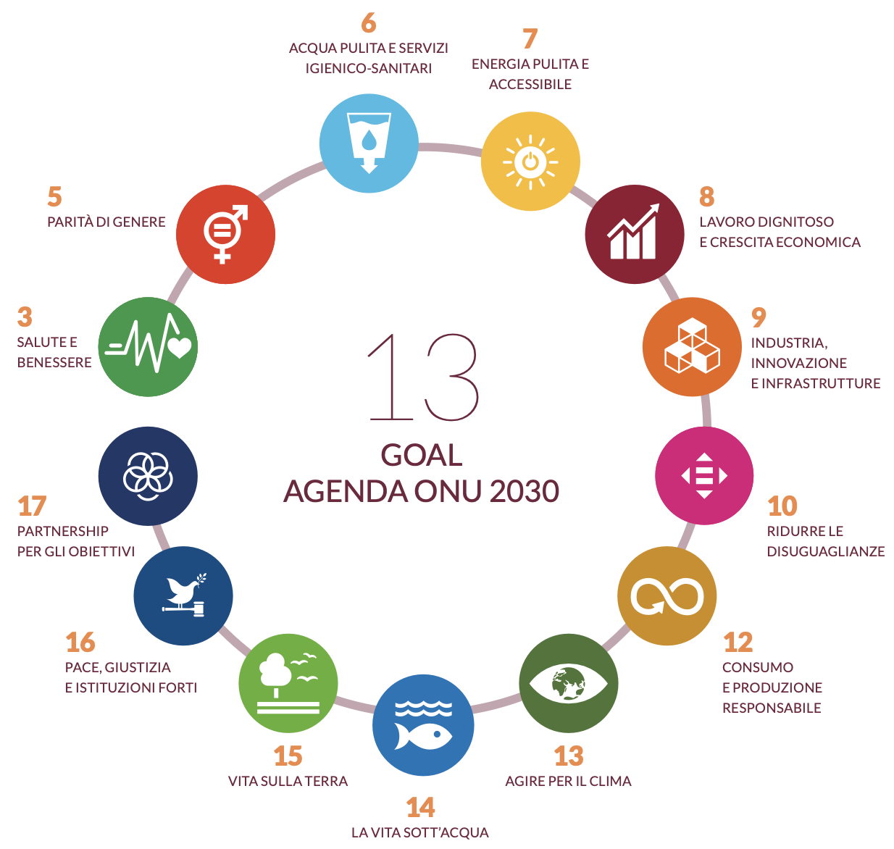
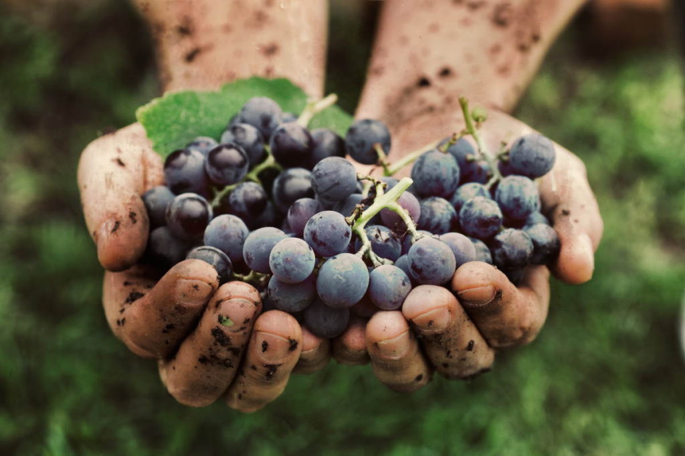
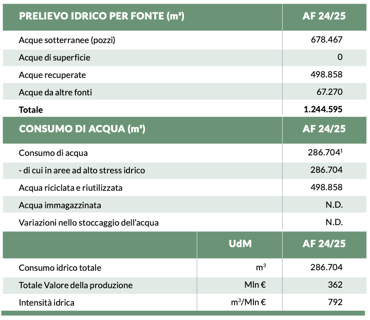
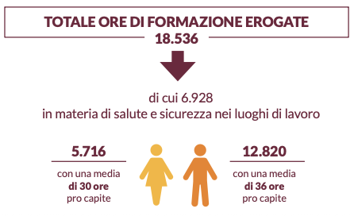
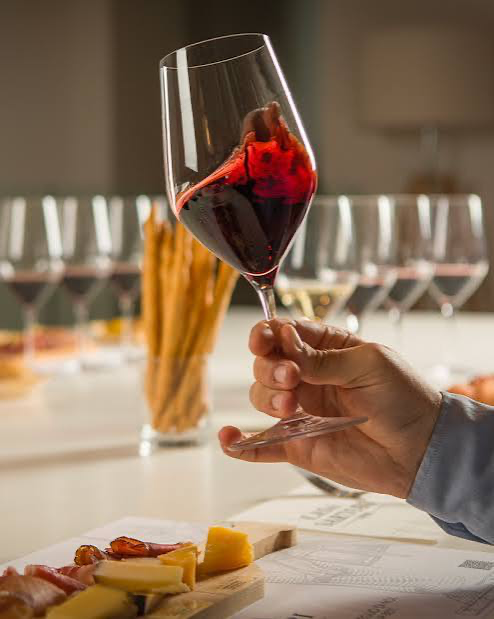
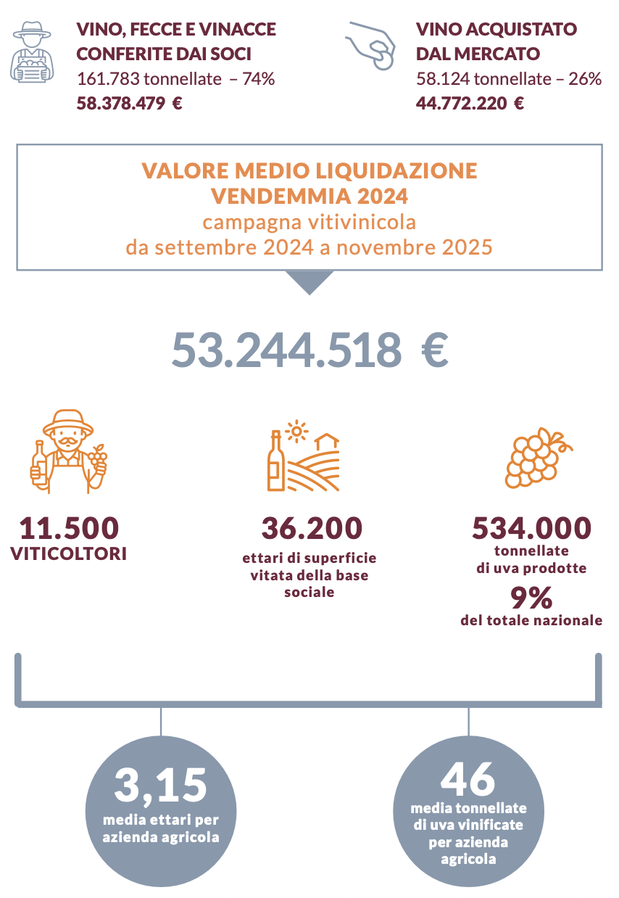

Introduzione
Caviro integra il principio dello sviluppo sostenibile all'interno del proprio modello di business. La missione mutualistica del Gruppo si concentra sulla valorizzazione e sulla tutela delle attività dei soci agricoli, con l'obiettivo di migliorarne le condizioni produttive e consolidare il legame con il territorio e le comunità locali. La sostenibilità rappresenta quindi un elemento centrale del modello cooperativo e delle scelte imprenditoriali, attraverso la ricerca di un equilibrio tra solidità economica, responsabilità ambientale e competitività nel lungo periodo.
In questa prospettiva, il Gruppo ha definito una Strategia di Sostenibilità costituita da linee guida che orientano le decisioni del management. Le scelte strategiche vengono valutate considerando gli effetti generati sull'ambiente, sulle persone e sul sistema economico lungo l'intera catena del valore.
La Strategia del Gruppo si fonda su due principi cardine:
- Integrazione della sostenibilità nel modello di business.
- Promozione del progresso sostenibile.
L'attuazione della strategia prevede l'individuazione di azioni specifiche per ciascun ambito di intervento, la cui responsabilità viene affidata ai dipartimenti competenti. Il management svolge un'attività di monitoraggio finalizzata a valutare i progressi compiuti, misurare i risultati ottenuti e individuare eventuali aree di miglioramento.
La Strategia è inoltre costruita attorno alle principali tematiche emerse dall'analisi di doppia materialità e si concentra su sei ambiti prioritari:
- Economia Circolare
- Riduzione delle Emissioni e Risparmio Energetico
- Coinvolgimento della Catena di Fornitura
- Valorizzazione delle Persone e delle Nuove Generazioni
- Collaborazione con le Comunità Interessate
- Prospettive di Lungo Periodo
Attraverso progetti e iniziative riconducibili a questi ambiti, Caviro contribuisce al perseguimento di 13 Obiettivi di Sviluppo Sostenibile, intervenendo sulle tematiche materiali individuate come prioritarie per il Gruppo e per i suoi principali portatori di interesse.

Environmental (E)
Per il Gruppo Caviro, la tutela dell'ambiente rappresenta una componente centrale della strategia di sostenibilità e interessa le diverse fasi della filiera vitivinicola. L'approccio adottato mira a ridurre gli impatti ambientali attraverso un modello basato sulla rigenerazione delle risorse, sulla riduzione delle emissioni e sul crescente impiego di energia proveniente da fonti rinnovabili.
La Filosofia delle tre 'R'
- Ritirare: il processo ha origine nei vigneti, dove vengono coltivate le uve successivamente vinificate dalle cantine socie. I sottoprodotti derivanti dalla lavorazione vengono raccolti e trattati insieme ad altri scarti provenienti dalle filiere agroalimentari, con l'obiettivo di recuperarli e destinarli a nuovi processi produttivi.
- Rigenerare: i materiali recuperati vengono trasformati in prodotti a valore aggiunto, secondo i principi dell'economia circolare. A questo approccio si affiancano l'impiego di packaging contenenti materiali riciclati e il recupero di oltre il 99% degli scarti prodotti.
- Restituire: la valorizzazione dei sottoprodotti consente di ottenere, oltre a nuovi prodotti, energia termica ed elettrica e fertilizzanti di origine naturale. Una parte delle risorse recuperate può quindi essere reintrodotta all'interno del ciclo produttivo e agricolo.
Economia Circolare e Caviro Extra
Il modello di economia circolare adottato dal Gruppo può essere sintetizzato nel principio “dalla terra alla terra”. In questo sistema Caviro Extra svolge un ruolo centrale nella gestione e nella valorizzazione dei sottoprodotti derivanti dalla vendemmia e dalle altre attività agroalimentari.
Dopo il conferimento delle uve da parte dei viticoltori e la successiva vinificazione, materiali come vinacce e fecce vengono recuperati e sottoposti a ulteriori processi di lavorazione. Da questi sottoprodotti è possibile ottenere alcol etilico, acido tartarico naturale e altri componenti destinati anche ai settori farmaceutico, cosmetico e alimentare.
Le frazioni residue vengono ulteriormente valorizzate attraverso la produzione di biometano ed energia da fonti rinnovabili. La componente organica finale può essere trasformata in compost e fertilizzanti naturali da utilizzare nuovamente in ambito agricolo. In questo modo, parte delle risorse derivanti dalla lavorazione delle uve ritorna al terreno, contribuendo alla chiusura del ciclo produttivo.

Risorse Idriche
La gestione delle risorse idriche costituisce un ulteriore ambito di intervento della strategia ambientale del Gruppo. Caviro adotta sistemi di monitoraggio e tecnologie finalizzate a ottimizzare l'impiego dell'acqua e a limitarne gli sprechi lungo le diverse fasi della filiera.
Negli stabilimenti, specifici sistemi consentono il recupero e il riutilizzo dell'acqua all'interno dei processi produttivi, contribuendo alla riduzione dei prelievi di nuova risorsa idrica. In ambito agricolo, invece, l'impiego di sensori meteorologici e climatici e di sistemi di irrigazione a goccia permette di utilizzare l'acqua in funzione delle effettive necessità delle colture, con particolare rilevanza nei periodi caratterizzati da scarsità idrica.

Emissioni, Suolo ed Energia
Accanto alla gestione delle risorse idriche, il Gruppo interviene sulla riduzione delle emissioni e sulla tutela dei terreni agricoli. Il monitoraggio delle emissioni di gas a effetto serra, dirette e indirette, permette di individuare le fasi maggiormente rilevanti sotto il profilo emissivo e di definire specifiche strategie di decarbonizzazione. Gli interventi riguardano in particolare il miglioramento dell'efficienza energetica degli impianti e il ricorso a fonti energetiche rinnovabili.
La tutela del suolo rappresenta un altro elemento della strategia ambientale. Caviro partecipa a progetti di ricerca e promuove l'impiego di ammendanti organici ottenuti anche attraverso il recupero dei sottoprodotti della vinificazione. Il loro utilizzo contribuisce all'apporto di sostanza organica nei terreni e può favorire il mantenimento della fertilità del suolo, contrastandone i processi di impoverimento e degradazione.
Sintesi della Dimensione Ambientale
Nel complesso, questi interventi mostrano come la dimensione ambientale della strategia di Caviro interessi sia le attività industriali sia quelle agricole. La gestione delle risorse naturali, il recupero dei sottoprodotti e la riduzione degli impatti ambientali costituiscono quindi elementi strettamente connessi al funzionamento dell'intera filiera.
Social (S)
La dimensione sociale della sostenibilità del Gruppo Caviro si concentra sulle relazioni con soci, dipendenti, fornitori e comunità locali. La natura cooperativa del Gruppo attribuisce particolare rilevanza alla valorizzazione delle persone e alla creazione di valore condiviso lungo l'intera filiera.
Le Persone del Gruppo
Il capitale umano costituisce una risorsa essenziale per il Gruppo. Caviro investe nella crescita del proprio personale attraverso attività di formazione, programmi dedicati allo sviluppo professionale e iniziative finalizzate alla tutela della salute e della sicurezza sul luogo di lavoro. Questi interventi mirano a favorire il miglioramento continuo delle competenze e a garantire condizioni di lavoro adeguate.

Fornitori e Filiera
La selezione dei fornitori non si basa esclusivamente su criteri di natura economica. Il Gruppo considera anche aspetti legati al rispetto dei diritti dei lavoratori, alla tutela dell'ambiente e alla responsabilità delle imprese coinvolte nella catena di approvvigionamento.
Questo approccio estende i principi di sostenibilità all'intera filiera produttiva e richiede la collaborazione tra i diversi soggetti che ne fanno parte. Le relazioni con fornitori e partner vengono quindi sviluppate sulla base di criteri di trasparenza, qualità e affidabilità, con l'obiettivo di promuovere comportamenti responsabili e contribuire alla creazione di valore condiviso sul territorio.

Comunità e Territorio
Grazie al forte legame con i territori in cui opera, Caviro sostiene diverse iniziative rivolte alle comunità locali, con particolare attenzione agli aspetti sociali, ambientali e culturali.
Tra i principali ambiti di intervento si possono individuare:
- Caviro per la comunità e la salute: iniziative orientate alla crescita inclusiva, al contrasto alla povertà, alla tutela della salute e al sostegno della ricerca scientifica.
- Caviro per l'ambiente e il territorio: sostegno ad associazioni impegnate nella diffusione di buone pratiche ambientali e in progetti dedicati alla tutela del territorio e della fauna.
Sintesi della Dimensione Sociale
L'analisi del Bilancio di Sostenibilità evidenzia la rilevanza attribuita dal Gruppo alla dimensione sociale. L'attenzione verso i dipendenti, la collaborazione con fornitori e partner della filiera e il sostegno alle comunità locali mostrano un approccio orientato alla creazione di valore condiviso e alla promozione dello sviluppo sostenibile dei territori in cui Caviro opera.
Governance (G)
La governance comprende l'insieme dei principi, delle strutture e dei processi attraverso i quali il Gruppo orienta le proprie attività e assume le decisioni strategiche. In quanto realtà cooperativa, Caviro basa il proprio modello di gestione sulla trasparenza, sul coinvolgimento dei soci e sulla creazione di valore condiviso e sostenibile nel lungo periodo.
Modello Organizzativo
Nel 2025, Caviro ha proseguito il processo di consolidamento del proprio assetto organizzativo, favorendo una maggiore integrazione tra le diverse aree di business. Le divisioni Vino e Materia & Bioenergia operano in maniera coordinata, contribuendo rispettivamente alla valorizzazione della filiera vitivinicola e allo sviluppo del modello di economia circolare del Gruppo.
Particolare attenzione viene dedicata al coordinamento tra le società del Gruppo e le diverse funzioni aziendali, con l'obiettivo di sviluppare le competenze interne, promuovere una gestione responsabile e perseguire obiettivi condivisi. Tale organizzazione contribuisce al miglioramento dell'efficienza operativa e alla capacità del Gruppo di adattarsi alle evoluzioni del mercato.
Base Sociale e Scopo Mutualistico
Il Gruppo è caratterizzato da una base sociale composta da numerose cantine associate e da migliaia di viticoltori distribuiti in diverse regioni italiane. La struttura cooperativa rappresenta un elemento centrale dell'organizzazione, rafforzando il legame con il territorio e favorendo la valorizzazione delle produzioni agricole conferite dai soci.
Lo scopo mutualistico costituisce uno dei principi fondamentali dell'attività del Gruppo. Attraverso il modello cooperativo, Caviro opera per generare valore a favore dei soci conferitori, valorizzando le materie prime e sostenendo le attività della filiera agricola. I dati riportati nel Bilancio di Sostenibilità evidenziano il ruolo della base sociale all'interno del sistema produttivo e mostrano come la partecipazione dei soci costituisca un elemento essenziale per lo sviluppo dell'organizzazione.

Sintesi della Governance
L'analisi del Bilancio di Sostenibilità evidenzia come la governance del Gruppo sia strettamente legata ai principi cooperativi e mutualistici. Il coordinamento tra le diverse aree aziendali, il coinvolgimento della base sociale e l'adozione di una prospettiva orientata al lungo periodo rappresentano elementi centrali per il perseguimento degli obiettivi di sostenibilità e per favorire lo sviluppo futuro dell'organizzazione.
Bilancio di Sostenibilità
Per ulteriori approfondimenti, è possibile consultare l'ultimo Bilancio di Sostenibilità del Gruppo Caviro, documento che costituisce la principale fonte delle informazioni e dei dati utilizzati per l'analisi presentata in questa pagina.
Consulta il Bilancio di Sostenibilità